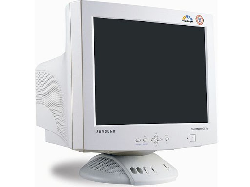

Főoldal
Akcióink
Hamburgerek
Megrendelés
Rólunk
Éttermünk története hosszú időkre visszavezethető.
Nagyszüleink már az 1950-es években étteremnek álmodták
meg ezt a helyet, így sokáig főztek finomabbnál finobb ételeket az ide betérőknek.
A kilakításkor törekedtünk arra, hogy két korszak kapcsolódjon össze: nagyszüleink
időszakából sok ma már retrónak számító díszt helyeztünk el a vendégtérben viszont
az ételek készítésekor már a mai korra is gondoltunk. Így éttermünk pallettáját szemlélve jól lakhat,
aki szeretné nyugodtan elkölteni az ébédjét illetve az is aki éppen csak beugrik egy hamburgerre.
Szakácsaink:
A honlap szerkesztője:
